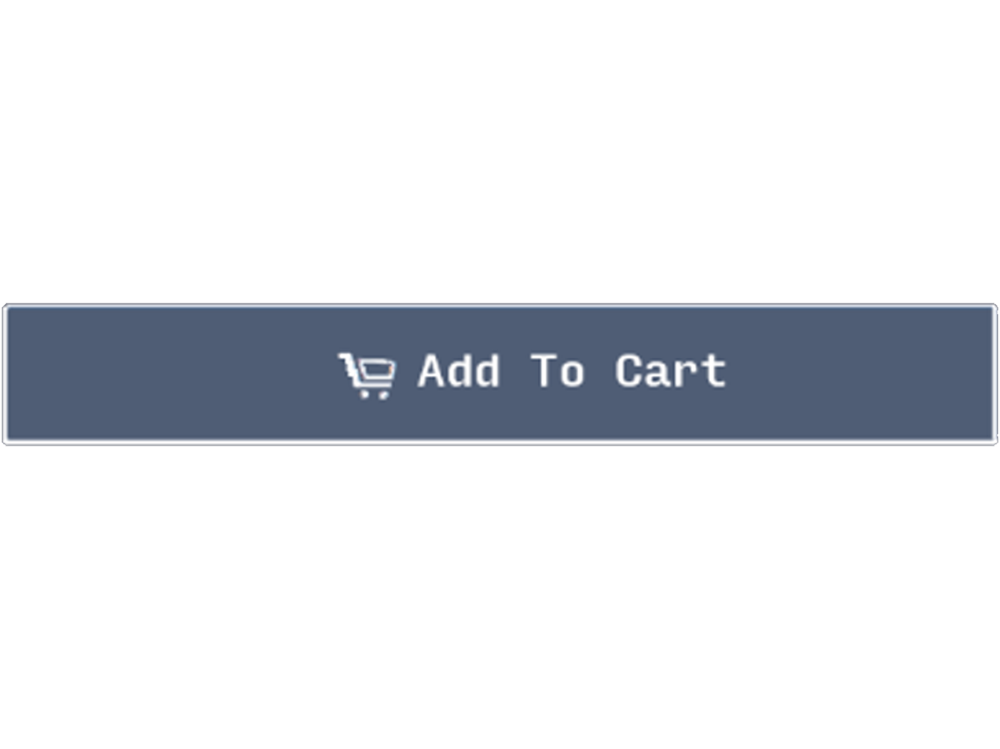

Shop
Case
Pcb
Plate+Case
Gateron Black Ink $0.75 (per switch)

Gateron Black ink switches are linear, like reds, but have a heavier 60gf actuation force. Black switches are a good option for heavy typists who tend to bottom out their keystrokes often